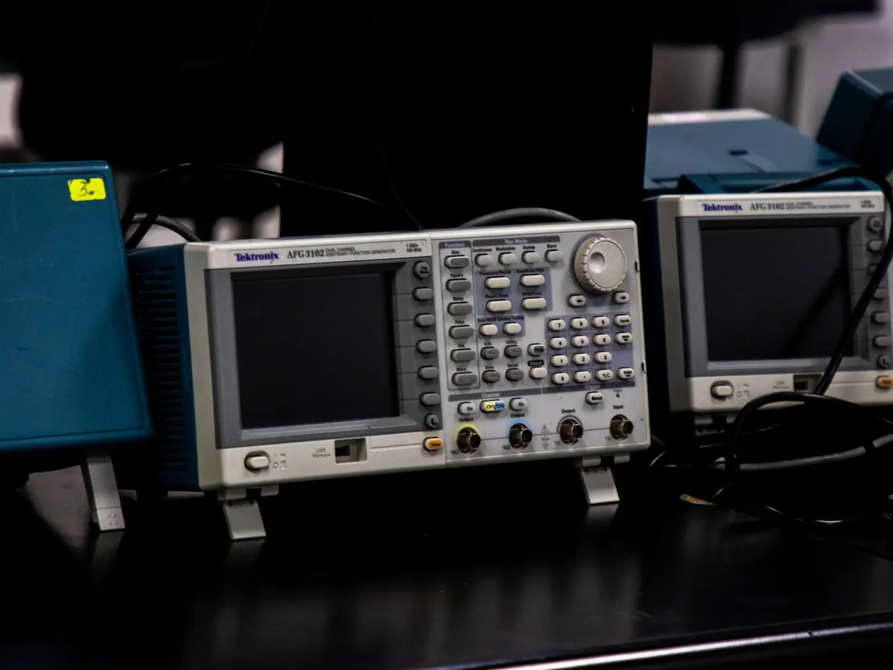

Hardware and Python
Automated bench test rig
Lab instruments driven by Python, so an amplifier test runs in 90 seconds.
- No public link.

By the numbers
- 45 min to 90 sfor a 12-point amplifier test
- 3 dBerror caught that manual checks missed
What I did
- Scripted the lab instruments in Python over SCPI.
- A 12-point amplifier test went from 45 minutes to 90 seconds.
- Charts draw themselves at the end of each run.
- It caught a 3 dB error that manual checks missed.